Introduction
In this tutorial, we are going to create a lush valley using sample assets provided by Sickhead Games. For this guide, the terrain will be created by importing a heightmap, opacity maps, and creating new materials.
Setup
This article was written using a newly generated project with the Full Template, which ships with plenty of free assets for testing and learning. For this specific tutorial, you will want to download a zip file containing additional assets for testing: CLICK HERE TO DOWNLOAD THE ZIP FILE
None of the modifications you are about to make are required for future tutorials, so feel free to create a new level or use an existing one for testing. As long as you have access to existing materials, you are good to go.
You will want to remove any existing TerrainBlocks since we will be creating one from scratch. Go ahead and delete any blocking objects, so you have a clean view.
(click to enlarge)
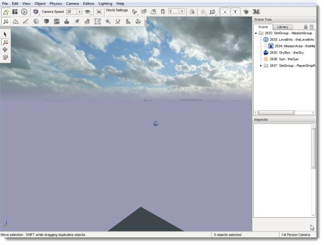
Heightmap, Opacity Layer, Terrain Textures
To get high-quality and professional looking terrain, you will want to use a 3rd party external tool. Examples include L3DT and GeoControl. These tools allow you to generate extremely detailed heightmaps that can be imported by Torque 3D and generate terrain data.
Several assets are required to successfully import and render a high quality heightmap. Most terrain generating applications provide proper exporters to get the job done. First, we will cover what these assets are. The follow example assets were provided by Russell Fincher at
Sickhead Games. These files are available for download in the setup section of this tutorial.
The primary asset required is the heightmap, which is an image used to store elevation data rendered in 3D by the engine. The heightmap itself needs to be a 16-bit greyscale image, power of two, and square. The lighter an area of a heightmap, the higher the elevation will be in that terrain location.
Example Heightmap

Next, you will want to use an opacity map. This map acts as a mask, which is designed to assign opacity layers. Opacity layers need to match the dimensions of the heightmap. 512x512 heightmap can only use a 512x512 opacity map.
If the opacity map is a RGBA image, four opacity layers will be used for the detailing (one for each channel). If you use an 8-bit greyscale image, only a single channel. You can then assign materials to the layers. This allows us to have up to 255 layers with a single ID texture map, saving memory which we can apply to more painting resolution.
Notice that the following example Opacity Map resembles the original heightmap.
Example Opacity Map

Finally, of course we want to use textures to paint the terrain. Instead of hand painting them, the opacity layer will automatically assign textures based on what channel they are loaded into. You will want to have three textures: a base (diffuse), a normal map, and a detail mask.
Diffuse

Normal

Detail
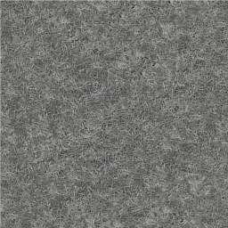
The base represents the color and flat detail of the textures. The normal map is used to render the bumpiness or depth of the texture, even though it is flat. Finally, the detail map provides up-close detail, but it absorbs most of their colors from the base map.
Importing A Heightmap
Now that you know what assets are required, we are going to import our first heightmap. What we are going to do is create a highly detailed valley scene, with snowcapped mountains. Since this section focuses on the World Editor, and not 3rd party tools, you are going to use sample assets. This will save time and allow you to learn the World Editor functionality first.
If you do not have the required files, they are available for download in the setup section of this tutorial. Again, these high quality assets were provided by Russell Fincher of Sickhead Games - Thanks Sickhead Games!
Create a folder in the game/art/terrains directory of your project called "sampleTerrain." Unzip the contents of the file you
downloaded into this new folder. You should have two heightmaps, identical except for varying resolution. You will also receive three sets of textures and opacity maps.
With your blank room running in the World Editor, click on File->Import Terrain Heightmap
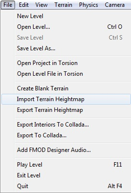
A floating dialog will appear and allow you to setup your new terrain before importing it.
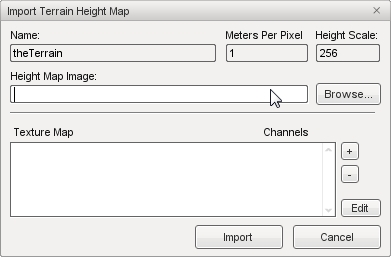
Name:If you specify the name of an existing TerrainBlock in the
dialog, it will update that TerrainBlock and its associated .ter file.
Or else it creates a new one.
Meters Per Pixel: What was the TerrainBlock SquareSize, which is a floating point value that does not require power of 2 values.
Height Scale: The height in meters you want white in the heightmap to be.
Height Map Image: File path to .png or .bmp heightmap itself. Remember, this needs to be a 16-bit greyscale image, power of two, and square.
Texture Map: This involves opacity layers, which need to match
the dimensions of the heightmap. If you add an RGBA image it will add 4
opacity layers to the list, one for each channel. If you add an 8-bit
greyscale image, it will be added as a single channel. You can then
assign materials to the layers. If you do not add any layers the
terrain will be created with just the Warning Material texture.
Keep the name default value, theTerrain. Click the browse
button near Height Map Image to open a file browser dialog. Go to where
you saved the terrain files, game/art/terrains/sampleTerrain and open
the heightmap1024.png.
(click to enlarge)

Next, click on the + button next to Texture Map to open
another file browser. This is where we are going to add our opacity
layers. Start by locating the prairie mask
(game/art/terrains/sampleTerrain/prairie/prairie_maskX.png). You can
choose the 512 or 1024, but you have to stick with that resolution for
the rest of the files we will be adding.
(click to enlarge)
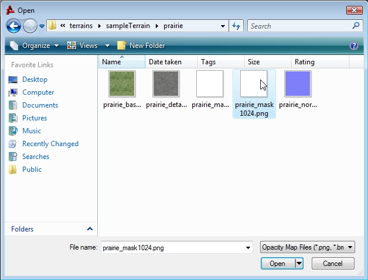
Do not worry if you do not see the detail, as the mask is
supposed to be solid white.
Repeat the process to add the rock wall
mask.
(click to enlarge)
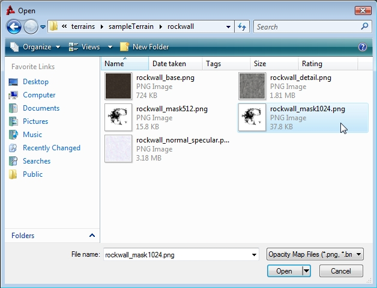
Perform this task one last time to add the snow mask.
(click to enlarge)

Now that our opacity layers have been added, we are going to
assign a material to each one. Click on the prairie layer, then click
the Edit button in the bottom right. You will now see the Terrain
Materials Editor.
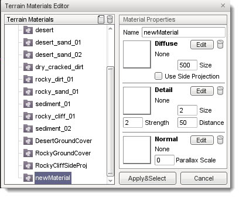
Click the New button, found at the top next to the garbage bin, to add a new material. You should see the entry
newMaterial appear at the bottom of the list to the left, under Terrain Materials. On the right side of the gui under Material Properties, in the Name field type in Prarie, then hit Enter. If you don't hit Enter after naming your new material, it will not be saved. In the list on the left, the
newMaterial entry should change to Prairie.
Next click the Edit button next to the Diffuse preview box. Again, a file browser will pop up allowing you to open the base texture file for the prairie material - select and open the file
\game\art\terrains\sampleTerrain\prairie\prairie_base.png. Alternatively, you can click the preview box itself, which is a checkered image until you add a texture.
(click to enlarge)

Once you have added the base texture, the preview box will update to show you what you opened. Next we'll do the same thing for the detail map. In the Detail preview box, below the diffuse section, click the Edit button. Using the file browser, open the detail map for our prairie material -
\game\art\terrains\sampleTerrain\prairie\prairie_detail.png.
(click to enlarge)
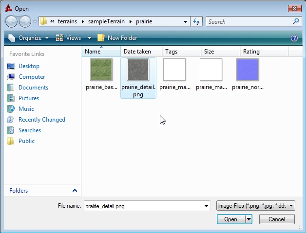
Lastly, do the same thing for the normal map. In the Normal preview box, below the Detail section, click the Edit button. Use the file browser to open the prairie normal map -
\game\art\terrains\sampleTerrain\prairie\prairie_normal.png
(click to enlarge)

Now we need to set some parameters. In the Diffuse box, the Size parameter controls the physical size in meters of the base texture - set it to 500.
In the Detail box, set Size to 2. This means that the material will be scaled to two meters on the terrain. On a terrain that is 1024 square meters, the Prairie material will repeat a little less than 205 times. The Distance parameter determines how far away from the camera must be before the detail map renders - set it to 50. Set the Strength parameter to 2.
Your final material properties should look like the following:
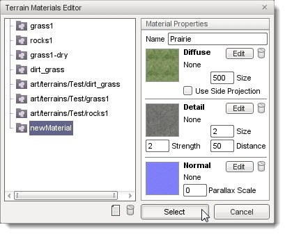
Click the Apply & Select button to assign the new Prairie material to the opacity layer.
The Import Terrain Height Map dialog will appear. Next, we will add the rock wall terrain material. In the Texture Map list, select the rockWallMask opacity layer, then click Edit.
Repeat the process of creating a new terrain material, using the rock wall textures. Your final result will look like this:
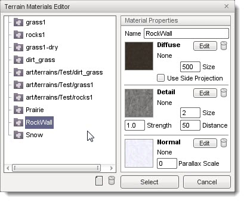
Notice that I have set the detail size to 2, and the detail distance
to 50.
We are going to add our final terrain material now. Back in the
Import Terrain Height Map dialog, select the snowMask opacity layer
then click edit. Repeat the process of creating a new terrain material,
using the snow textures. Your final result will look like this:
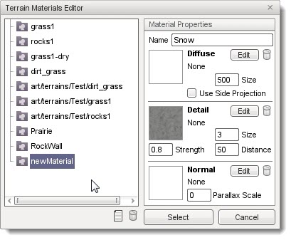
Now, we are all set to generate the terrain. Back in the
Import Terrain Height Map dialog, click on the import button. It will
take a few moments for Torque 3D to generate the terrain data from our
various assets. When the import process is complete, the new
TerrainBlock will be added to your scene (you might need to move your
camera to see it).
(click to enlarge)
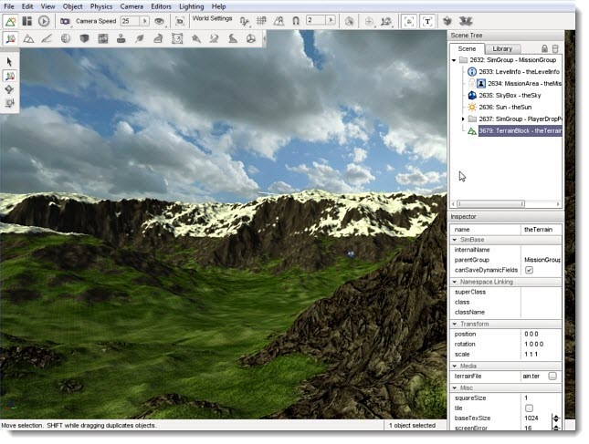
If you zoom in close to where materials overlap, you can notice the high quality detail and smooth blending that occurs.
(click to enlarge)
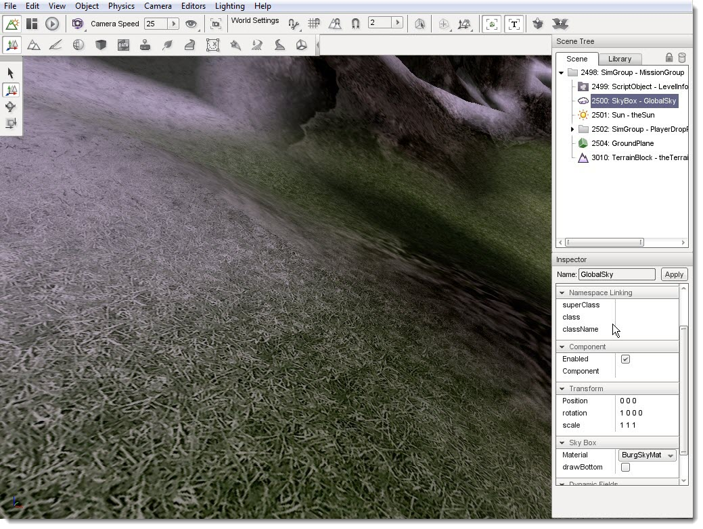
Painting/Adjusting New Material
Go ahead and select the Prairie material in your Terrain Painter palette.
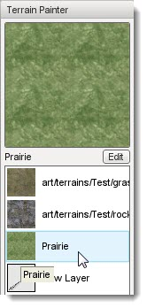
Pick any location on your terrain, using any size or shape brush you wish. It does not matter where you start.
(click to enlarge)
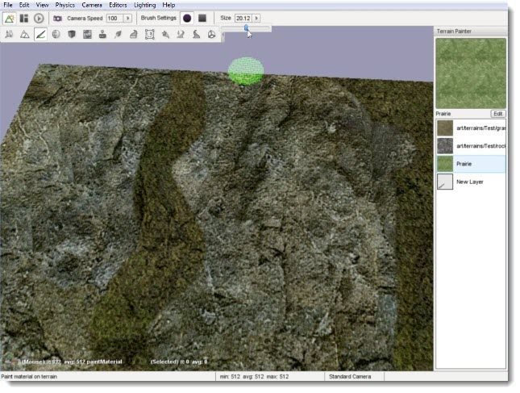
Once you are set, click and hold down the left mouse button
to begin painting. Make sure you paint a fairly large area. We will be
changing the properties of this material shortly, so we need to be able
to see it from a distance.
(click to enlarge)
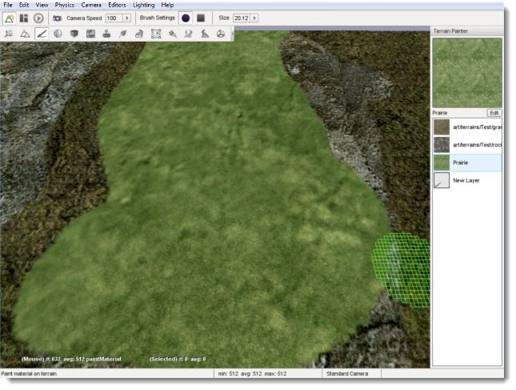
From a distance, you may notice that your Prairie material
looks blurry and undefined. Even though the material has a detail
texture, it is not visible from this far away. Double click on your
Prairie TerrainMaterial in the Terrain Painter palette.
Once the editor pops up, click on the Prairie entry to view its properties. Up the Detail Distance from 50 to 250.
(click to enlarge)
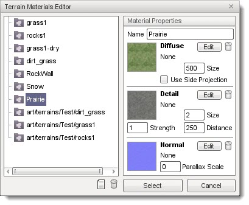
Click select to close the editor. The terrain you have
painted with the Prairie material has updated, and you should now see
more definition even at a distance.
(click to enlarge)
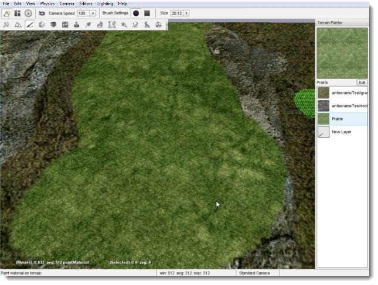
Now that the terrain looks better at a distance, what about
close up? A closer view of the the Prairie-painted terrain will show
off the detail texture quite well.
(click to enlarge)
If you think the "grassy" appearance is too large or stretched, we can
tweak that from the Terrain Materials Editor. With the Prairie layer
still selected, open the editor. Lower the Detail Size value, which will cause the detail texture to repeat more often per meter.
(click to enlarge)
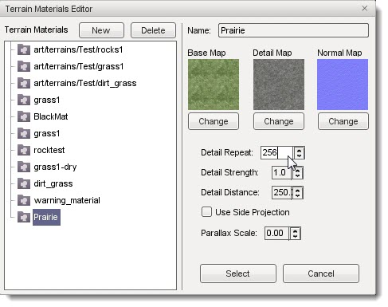
Click select to apply the changes. Again, your painted
terrain will update immediately to reflect the changes you just made.
Notice how much more detailed the TerrainMaterial.
(click to enlarge)
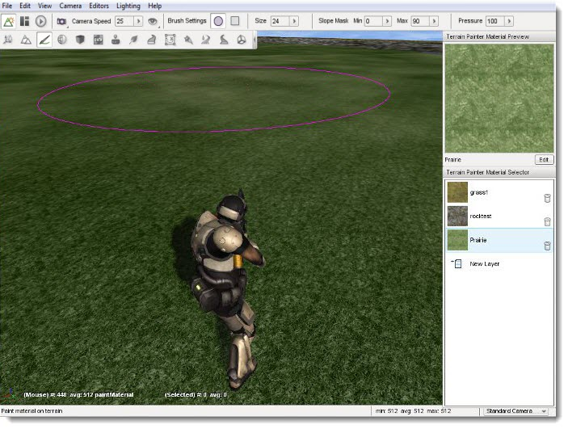
The values we just set are somewhat extreme. You will need
to experiment with the values on your own assets to find a balanced
setting that looks well up close and from a distance. The last task we
are going to accomplish is swapping TerrainMaterials between layers.
In this tutorial, grass1 is layer0 and Prairie is layer2.
Since the first layer is the base material applied to the terrain, it
makes up the majority of the level. Start by selecting the first layer
(grass1) in the palette.
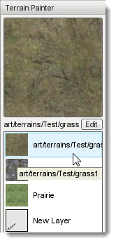
Instead of manually painting the entire terrain a separate material, we
can flip the layers. Double click the grass1 layer to open it up in the
Terrain Materials Editor. Once it is open, select the Prairie
TerrainMaterial from the list.
(click to enlarge)
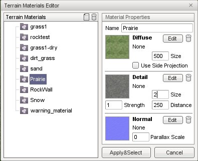
Click the select button. The Prairie TerrainMaterial will
now be used for layer0, thus covering the majority of the TerrainBlock.
(click to enlarge)
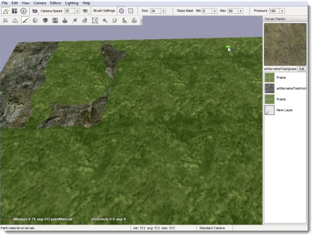
The intricacy of using TerrainMaterials and the layer system becomes
much more prominent when working with opacity layers, advanced
modification, and adding specific objects such as GroundCover. Also
keep in mind that any asset files you modify outside of Torque 3D will
automatically update in the editor.
These last two shots are used to show you the scale of this
massive terrain, which retains its high level detail and levels of
detail (LODs):
From a Distance
(click to enlarge)
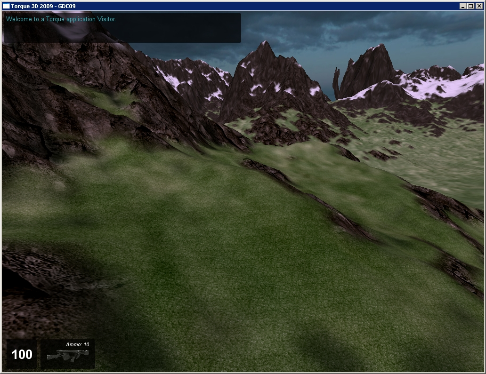
Compare to Player Scale
(click to enlarge)
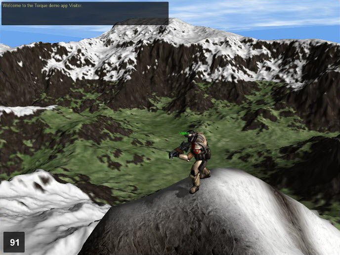
Conclusion
This tutorial showed you how to create a high resolution terrain from scratch by importing a quality heightmap and opacity maps. Even after you have your terrain, you can continue to tweak
it using the Terrain Editor and Terrain Painter tools.
|
{kind=link}
{kind=link}
{kind=link}
{kind=link}
{kind=link}
{kind=link}
{kind=link}
{kind=link}
{kind=link}
{kind=link}
{kind=link}
{kind=link}
{kind=link}
{kind=link}
{kind=link}
{kind=link}
{kind=link}